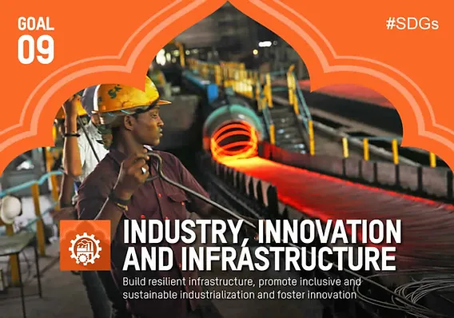

Goal 9 aims to build resilient infrastructure, promote sustainable industrialization, and foster innovation to drive economic growth, social development, and climate action. Despite progress like 95% global mobile broadband coverage and increased investments in research and development, challenges such as declining manufacturing, supply chain issues, and inequalities in Least Developed Countries (LDCs) remain. Collaboration across governments, NGOs, and the private sector is crucial to ensure sustainable practices, infrastructure investments, and equitable opportunities worldwide.Without action, achieving poverty eradication and broader sustainable development goals will become more difficult, underscoring the need for collaboration among governments, NGOs, and the private sector to establish sustainable industrial practices, invest in infrastructure, and advocate for equitable opportunities worldwide.